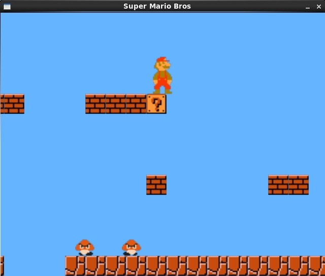

Project Overview
Mario is able to jump and land on the platforms throughout the level to get to the flag on the far right side! Throughout the level, you will encounter dangerous enemies: goombas and koopas. If you touch one of those enemies you will lose a life. Additionally, if you fall into a pit you will lose a life. If you lose three lives the game is over. However, you may kill enemies by jumping and landing on top of them. Furthermore if you get mushroom, you will turn into big Mario and be able to get hit by an enemy twice without losing a life. If manage to get to the flag at the end of the level you will win!
What I Learned
By doing this project, I not only understand C++ very well, but I can also take the OOP concepts I learned and apply them to other languages like Python or JavaScript to complete more projects. Also, by working with a partner, I was forced to use a code sharing repo, so I learned how to use git and GitHub. To this day, I back up everything I work on to my GitHub page (either publicly or privately, so don't be surprised if not all my projects are visible). We also used SDL2 as our graphics library, which was an improvement from my PacMan project, where I used a combination of lines and shapes to code the game. Lastly, I learned how to plan out a large project, and how difficult it is to anticipate all of the possible nuances a large software system can have.
My Role:
My main role in the project was getting Mario on the screen. While this may seem trivial at first, it was actually very difficult to implement. Mario has a ton of minute details in his physical movements, which was hard to replicate in the coding of his actual character movements. He has three different running accelerations, a different skidding deceleration, and very radical aerial physics. I coded all of these features individually, slowy building upon the previous versions.
Once I implemented Mario’s physics engine, he was able to move around the screen as he would in the SNES game. However, the code was not easily reusable, so I had to encapsulate these movements into a class, with very easy functions to call from the main program. I wrapped the physics into an input handling method. Also, I created a move method to update his position and a render method to show him on the screen. It was very useful to have this class because once it was completed, we did not have to worry how certain functions would act, we just had to call them. Throughout this project, I learned many OOP paradigms and how to properly utilize objects as a part of a larger program.
My other big role in the project was to create the map. I created the NonMoving abstract class, which is basically a general map element that has different hitboxes and ways it can interact with the environment. From this class there are many derived classes, including Brick, Question, Pipe, Stair, and Flag. These also have different ways to interact with the other elements on screen. Once I created the base class, creating the derived classes was rather simple. They all had a render function from the base class and the collision detection with Mario was handled in Mario’s class. All they had to do was return their hitbox, and let the Mario class do the collision detection.